8.4 选择排序
8.4.1 简单选择排序
基本思想：每一趟在后面 n- i -1(i = 1,2,...,n-1)个待排序元素中选择关键字最小的元素，作为有序子序列的第 i 个元素。直到第 n -1 趟执行完毕。
// 选择排序
void SelectSort(int A[], int n)
{
for (int i = 0; i < n - 1; i++)
{
int j = i;
int min = A[i];
int flag = i; // 最小元素的下标
// 找到最小值
for (; j < n; j++)
{
if (min > A[j])
{
min = A[j];
flag = j;
}
}
int tmp = A[flag];
A[flag] = A[i];
A[i] = tmp;
}
}
这个算法不稳定。
8.4.2 堆排序
什么是“堆”？
若 n 个关键字序列 L[1 ... n] 满足下面某一条性质，则称为堆（Heap）:
① 满足：L(i) ≥ L(2i) 且 L(i) ≥ L(2i+1) (1≤ i ≤ n/2)————称为大根堆
② 满足: L(i) ≤ L(2i) 且 L(i) ≤ L(2i+1) (1≤ i ≤ n/2)————称为小根堆
从二叉树的视觉：
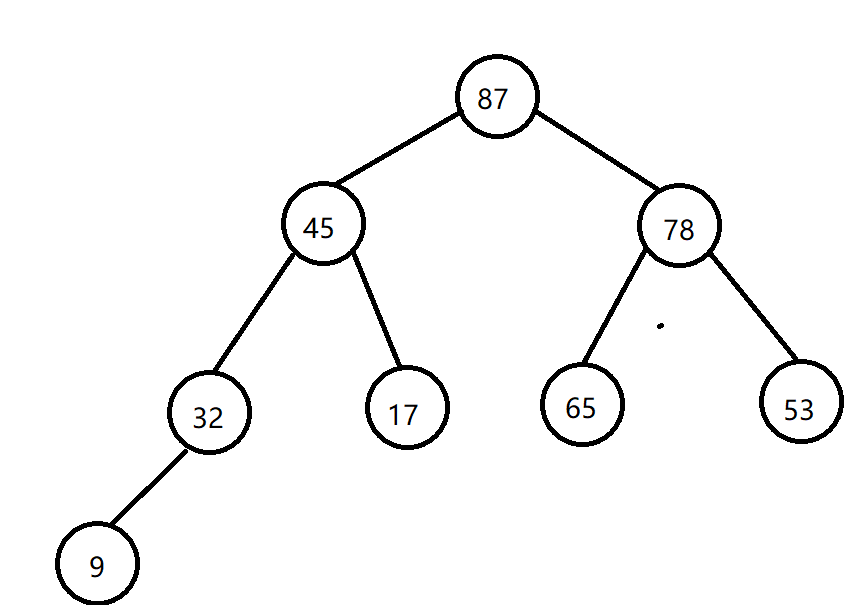
如果按照层次遍历来标号，那就是对应的数组了。
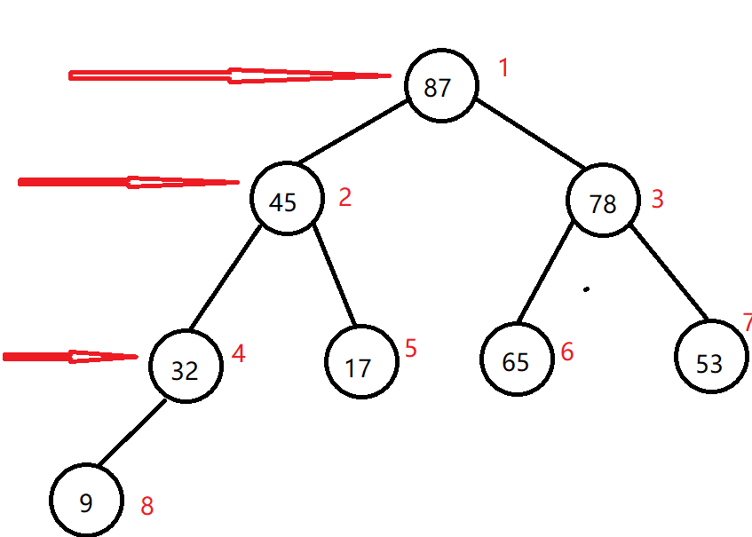
| 0 | 1 | 2 | 3 | 4 | 5 | 6 | 7 | 8 |
|---|---|---|---|---|---|---|---|---|
| 87 | 45 | 78 | 32 | 17 | 65 | 53 | 09 |
即 根≥左、右结点（大根堆）。
这样每次选一个最大的值出来，就很快，直接就是根结点的值最大。
问题是怎么建立大根堆？
建立大根堆
假如初始序列为：
| 0 | 1 | 2 | 3 | 4 | 5 | 6 | 7 | 8 |
|---|---|---|---|---|---|---|---|---|
| 53 | 53 | 17 | 78 | 9 | 45 | 65 | 87 | 32 |
第一步：把所有非终端结点都检查一遍，是否满足大根堆的要求，如果不满足，则进行调整。非终端结点有个特点：下标 ≤ ⌊n/2⌋

在这个例子中，只需检查 i ≤ 4下标的结点。
应该从后往前处理。也就是元素为 9 的结点进行调整。
提示：
i 的左孩子——2i
i 的右孩子——2i+1
i 的父结点——⌊i/2⌋
显然这里以元素9为子树的树不满足大根堆，需要与当前结点的更大的一个孩子互换。
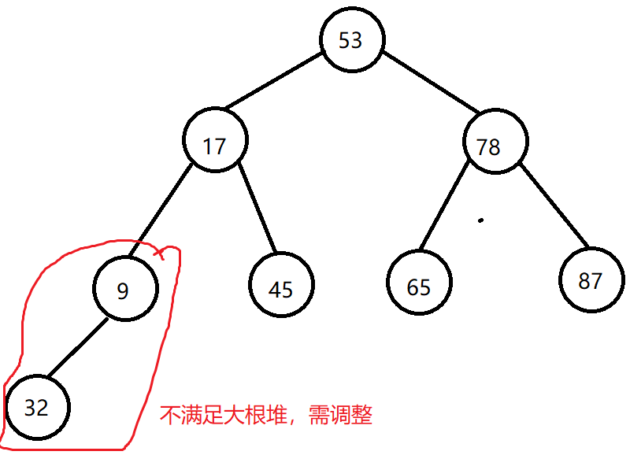
互换后：
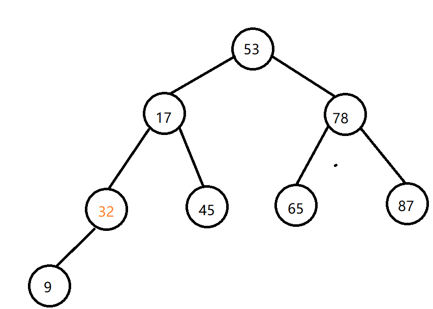
此时数组为：
| 0 | 1 | 2 | 3 | 4 | 5 | 6 | 7 | 8 |
|---|---|---|---|---|---|---|---|---|
| 53 | 17 | 78 | 32 | 45 | 65 | 87 | 9 |
这时候到下标为3的元素，发现不满足大根堆：
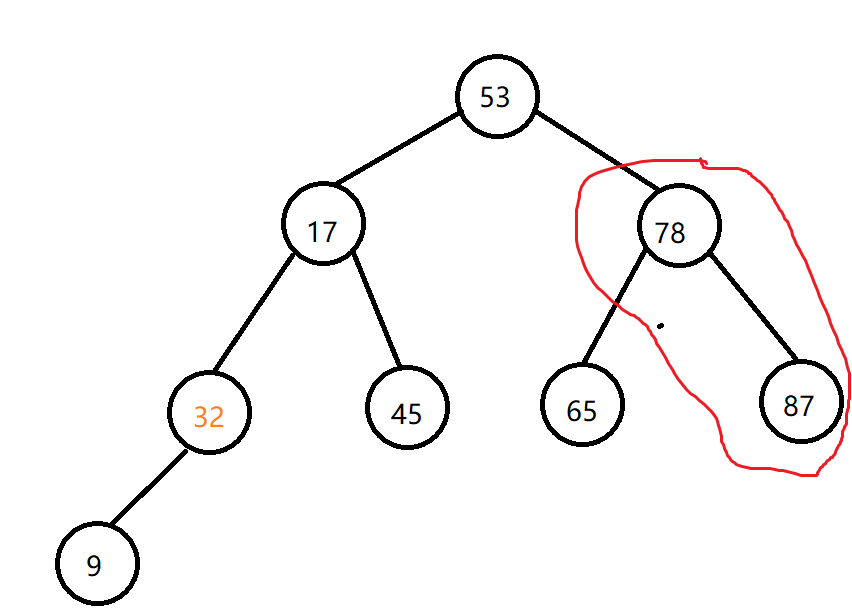
需要和孩子中最大的结点进行互换：
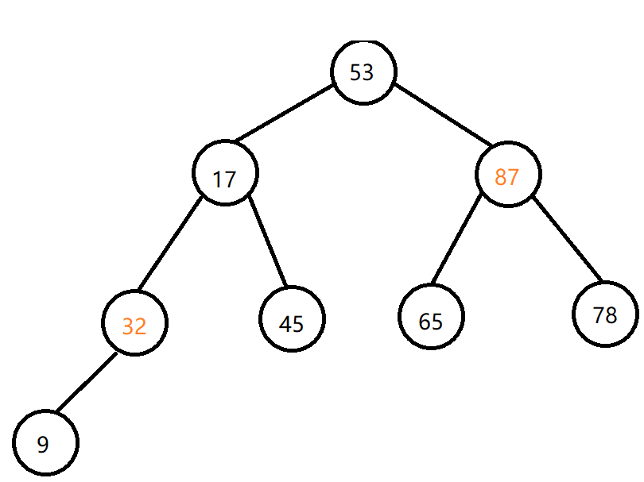
此时数组为：
| 0 | 1 | 2 | 3 | 4 | 5 | 6 | 7 | 8 |
|---|---|---|---|---|---|---|---|---|
| 53 | 17 | 87 | 32 | 45 | 65 | 78 | 9 |
接着处理下标为 2 的结点。
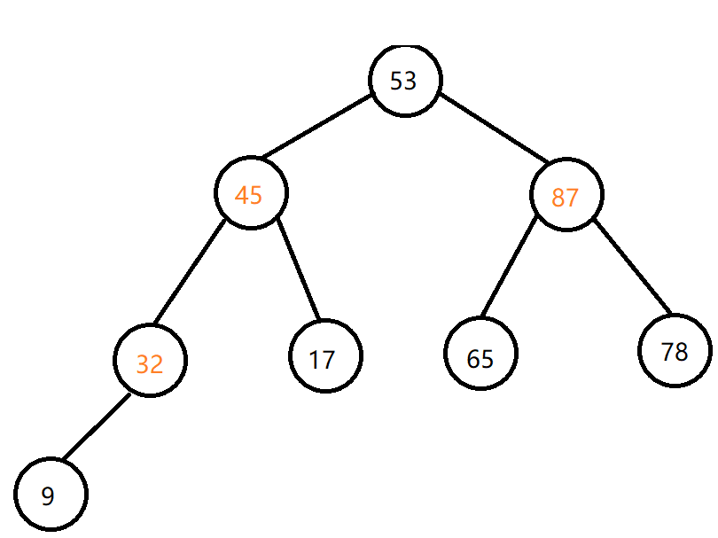
接下来换下标为 1 的结点：
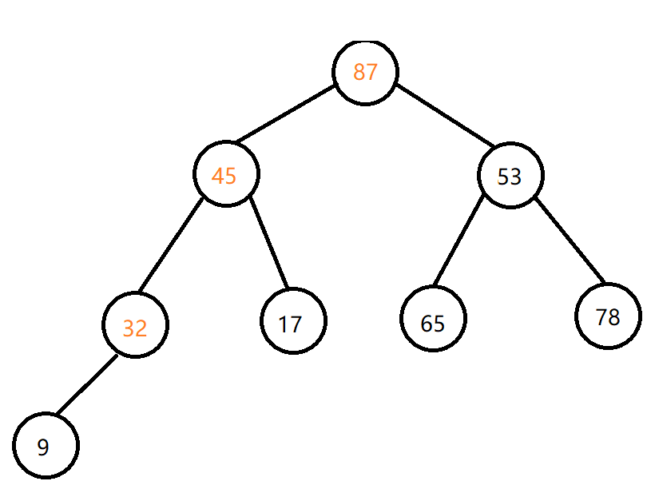
这个时候，发现根结点的右子树（53）没有符合大根堆要求，继续调整：
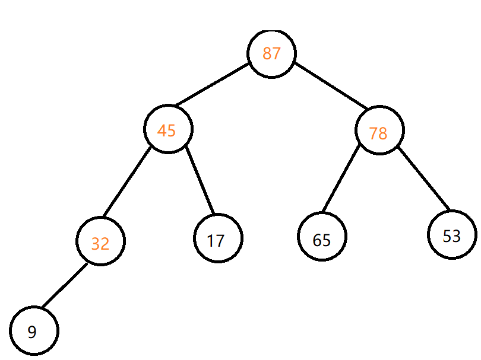
此时数组：
| 0 | 1 | 2 | 3 | 4 | 5 | 6 | 7 | 8 |
|---|---|---|---|---|---|---|---|---|
| 87 | 45 | 78 | 32 | 17 | 65 | 53 | 9 |
相关代码：
void BuildMaxHeap(int A[], int len)
{
for(int i=len/2; i > 0; i--) // 从后往前调整所有非终端结点
HeadAdjust(A, i, len);
}
void HeadAdjust(int A[], int k, int len)
{
A[0]=A[k]; // A[0] 暂时存放子树的根结点
for(int i = 2*k; i <= len; i*=2){ // 沿 key 较大的子结点向下筛选
if(i < len && A[i] < A[i+1]) // 取key较大的子结点的下标
i++;
if(A[0] >=A[i])
break; // 筛选结束
else{
A[k]=A[i]; // 将 A[i] 调整到双亲结点上
k=i; // 修改 k 值，以便继续向下筛选
}
}
A[k] = A[0]; // 被筛选结点的值放入最终位置
}
// 堆排序的完整逻辑
void HeapSort(int A[], int len)
{
BuildMapHead(A,len); // 初始建堆
for(int i = len;i>1; i--) // n-1趟的交换过程和建堆过程
{
swap(A[i], A[0]); // 堆顶元素和堆底元素互换
}
HeadAdjust(A,1, i-1); // 把剩余待排序元素整理成堆
}
大根堆建立之后，将最大元素（根元素）和待排序序列中的最后一个元素交换：
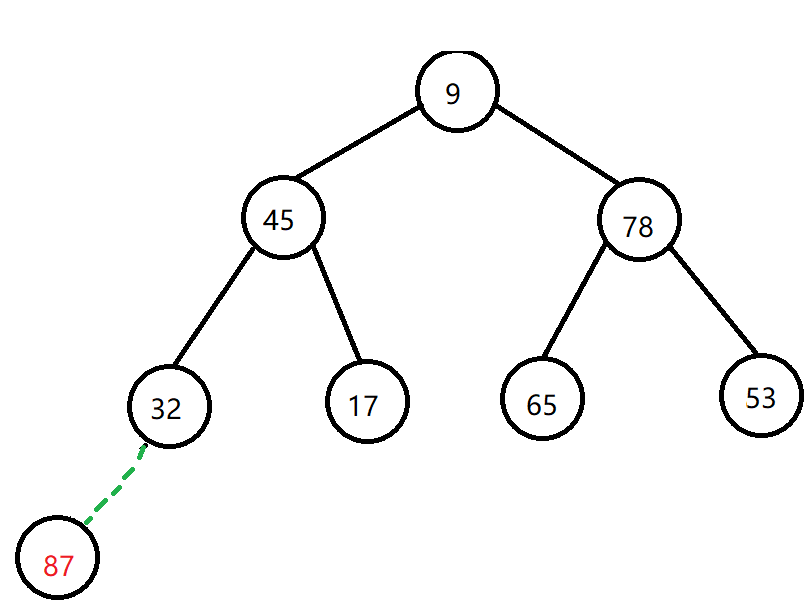
此时数组：
| 0 | 1 | 2 | 3 | 4 | 5 | 6 | 7 | 8 |
|---|---|---|---|---|---|---|---|---|
| 9 | 45 | 78 | 32 | 17 | 65 | 53 | 87 |
87已经算是一个排好序的子序列了。现在下标为 1 的元素（值为9）又不满足大根堆了，需要重新调整，直接调用 HeadAdjust(A, 1, 7)。
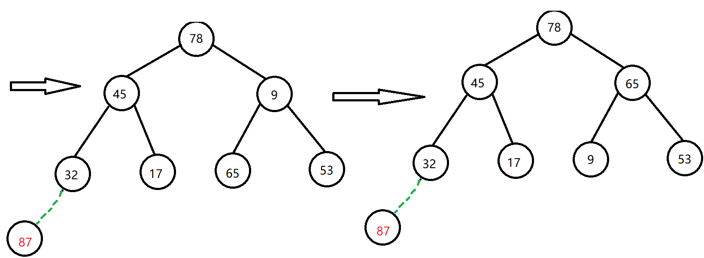
| 0 | 1 | 2 | 3 | 4 | 5 | 6 | 7 | 8 |
|---|---|---|---|---|---|---|---|---|
| 78 | 45 | 65 | 32 | 17 | 9 | 53 | 87 |
继续将堆顶元素和待排序最后一个元素交换。
| 0 | 1 | 2 | 3 | 4 | 5 | 6 | 7 | 8 |
|---|---|---|---|---|---|---|---|---|
| 53 | 45 | 65 | 32 | 17 | 9 | 78 | 87 |
53 又不符合大根堆了。继续调整：HeadAdjust(A, 1, 6)
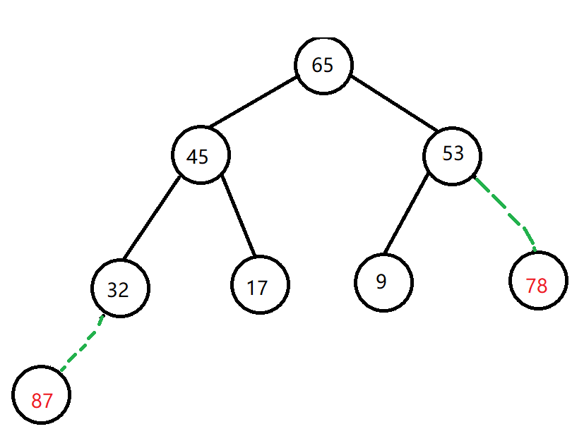
此时数组：
| 0 | 1 | 2 | 3 | 4 | 5 | 6 | 7 | 8 |
|---|---|---|---|---|---|---|---|---|
| 65 | 45 | 53 | 32 | 17 | 9 | 78 | 87 |
继续将对顶元素和待排序最后一个元素互换
此时数组：
| 0 | 1 | 2 | 3 | 4 | 5 | 6 | 7 | 8 |
|---|---|---|---|---|---|---|---|---|
| 9 | 45 | 53 | 32 | 17 | 65 | 78 | 87 |
接着还是执行调整HeadAdjust(A, 1, 5)：
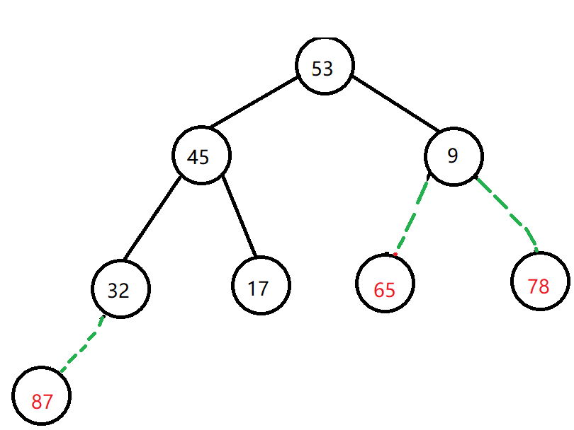
此时数组：
| 0 | 1 | 2 | 3 | 4 | 5 | 6 | 7 | 8 |
|---|---|---|---|---|---|---|---|---|
| 53 | 45 | 9 | 32 | 17 | 65 | 78 | 87 |
接着互换 ：
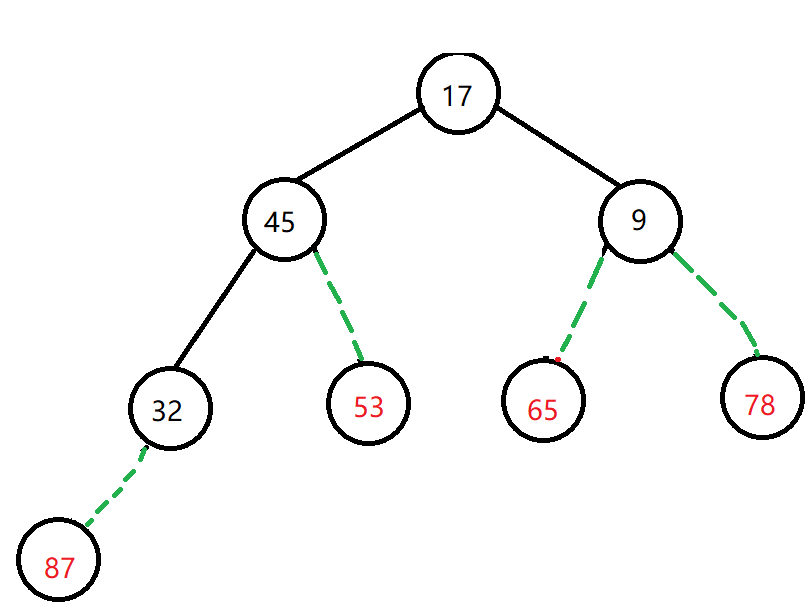
此时数组：
| 0 | 1 | 2 | 3 | 4 | 5 | 6 | 7 | 8 |
|---|---|---|---|---|---|---|---|---|
| 17 | 45 | 9 | 32 | 53 | 65 | 78 | 87 |
接着调整HeadAdjust(A, 1, 4)：
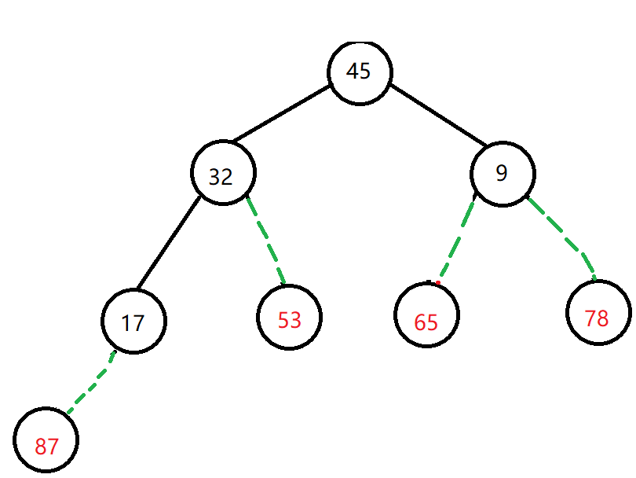
接着互换：
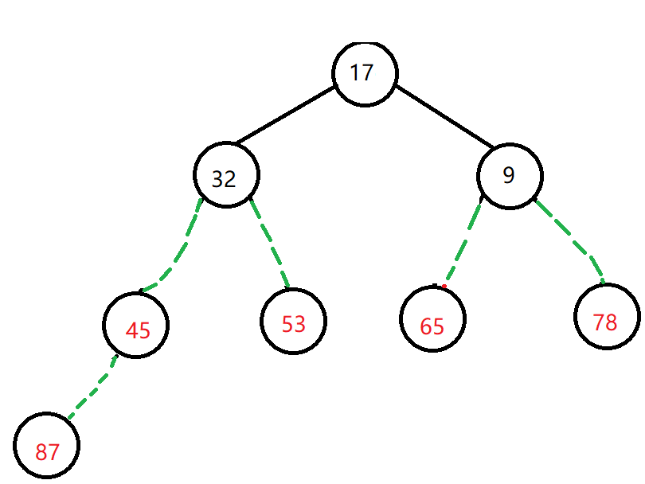
此时数组
| 0 | 1 | 2 | 3 | 4 | 5 | 6 | 7 | 8 |
|---|---|---|---|---|---|---|---|---|
| 17 | 32 | 9 | 45 | 53 | 65 | 78 | 87 |
接着调整HeadAdjust(A, 1, 3)：
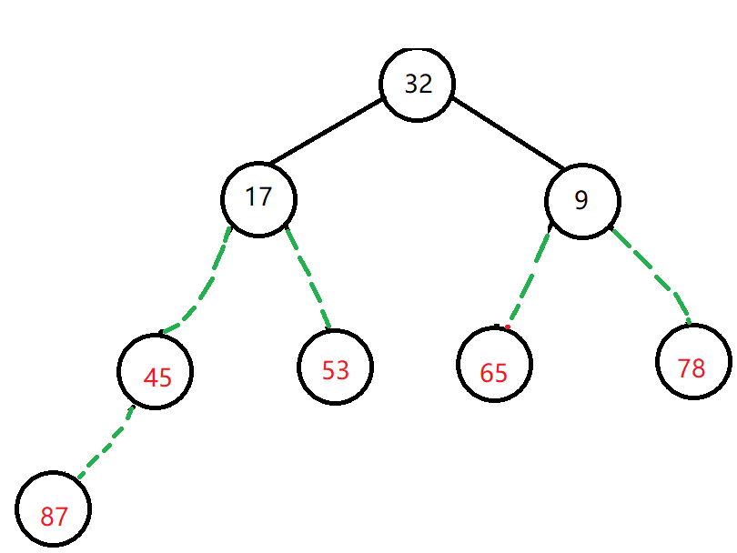
接着互换：
此时数组
| 0 | 1 | 2 | 3 | 4 | 5 | 6 | 7 | 8 |
|---|---|---|---|---|---|---|---|---|
| 9 | 17 | 32 | 45 | 53 | 65 | 78 | 87 |
接着调整HeadAdjust(A, 1, 2)：
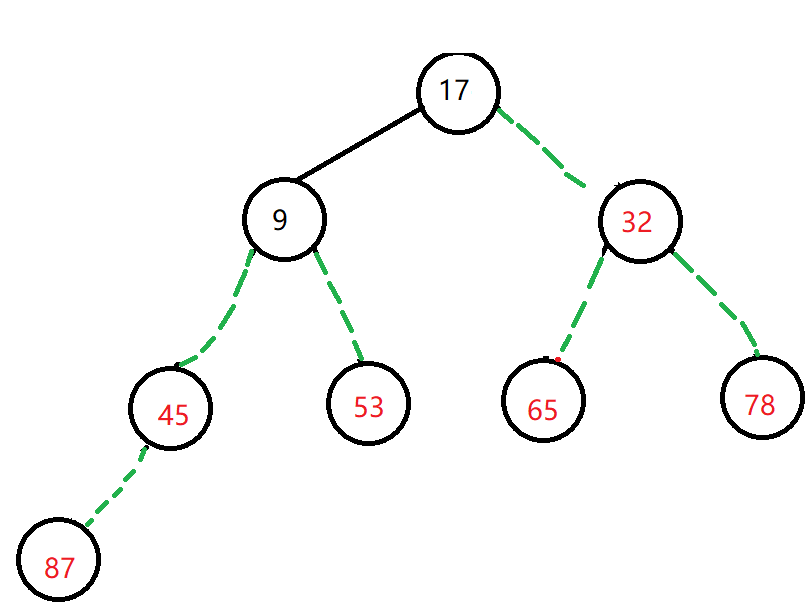
接着互换：
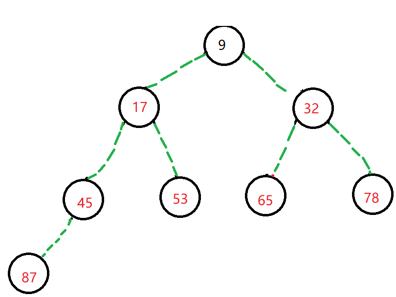
此时数组：
| 0 | 1 | 2 | 3 | 4 | 5 | 6 | 7 | 8 |
|---|---|---|---|---|---|---|---|---|
| 9 | 17 | 32 | 45 | 53 | 65 | 78 | 87 |
这样就得到一个有序的数组了！！！